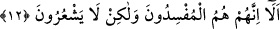

karıştırdıklarını söylemek istediklerini sanarak, “kendilerinin sadece ıslah ediciler
olduklarını” ve asla bozgunculuk yapmadıklarını söylemişler ve kendilerince herhangi
bir karıştırmanın söz konusu olmadığını belirtmek istemişlerdir.
Münâfıklar, mü’minlerin kendileri hakkında ifsâd ile ıslâhı karıştırmakta olduklarını
sanmışlardı. Allah Teâlâ da onların durumlarının iddiâ ettiklerinin tam tersi olduğunu
bildirmek üzere:
12. Şunu bilin ki, onlar bozguncuların ta kendileridir, lâkin anlamazlar.
Ey mü’minler şunu biliniz ki onlar müfsidlerin ta kendileridir. Münâfıklar ıslah ve
ifsâd sıfatlarından kendilerinde sadece ıslâhın bulunduğunu, ifsâdın olmadığını iddiâ
edince Allah Teâlâ onların sadece bozguncular olduklarını ve asla ıslah ediciler
olmadıklarını belirterek bu îtikâdlarını tam tersine çevirmiştir. Dolayısıyle münâfıklar,
sâdece ve sâdece küfürleri sebebiyle kendilerini ve îmândan alıkoymak sûretiyle
insanları ifsâd eden kimselerdir. Bunlar asla bozguncu olmaktan kurtulup ıslah edici
olamazlar. Âyet-i kerîmeden sadece münâfıkların bozguncu olacağı anlaşılmaz.
Başkaları da bozguncu olabilir.
Daha sonra Allah Teâlâ: “Fakat onlar kendilerinin bozguncu olduklarının farkında
değillerdir.” buyurarak onların anlayışsız olduklarını ifâde etmiştir. Âyet-i kerîme,
münâfıkların bozguncular olduklarının hissedilebilir bir durum olduğunu fakat,
münâfıkların his ve şuûrdan mahrûm yaratıklar olmaları sebebiyle bunu
farkedemediklerini belirtmektedir.
Şeyh Tefsîri’nde şöyle demiştir: Bozgunculuğun (fesâd), şuûr; yâni farkında olma
ifâdesiyle kullanılması ibâreye çok uygundur. Zira bozgunculuk âdeten, hissedilebilir
şeylerdendir. Burada Allah Teâlâ’nın, münâfıkların mü’minler için söylediklerini
kendilerine çevirmesinden dolayı mü’minlerin şerefine işâret vardır. Nitekim Hz.
Peygamber (a.s.) hakkında da aynı şey vuku bulmuştu. Müşriklerden Velîd b. Muğîre,
Peygamberimiz hakkında “O mecnundur” demiş Allah Teâlâ da: “Sen Rabbinin nimeti
sâyesinde mecnûn değilsin.” (el-Kalem, 68/2) buyurarak bunu nefyetmiş ve sonra da
bu mel’ûnu kınama kabilinden olmak üzere: “Şunların hiçbirine itâat etme! Yemin
edip duran, aşağılık, herkesi kınayan, söz götürüp getiren, hayra engel olan,
saldırgan, günahkâr, kaba, sonra kötülükle damgalı” (el-Kalem; 68/10-13)
buyurmuştur. Bu sayılan kötü özelliklerin yanısıra o, veled-i zinâdır. Rasûlullah (s.a.):
“Yalnız O’nu vekil tut” (el-Müzzemmil, 73/9) âyetinin muktezâsınca işlerinde yalnız
Allah Teâlâ’yı vekil tutmuştu. Allah Teâlâ da onun yardımına kâfî gelmiştir.
Hakîkat ehli şöyle demiştir: Kutup diye isimlendirilen zatlardan ve yardımcılarından
hârikulâde şeyler (kerâmetler) pek az sâdır olur. Aksine bu tür şeyler onların